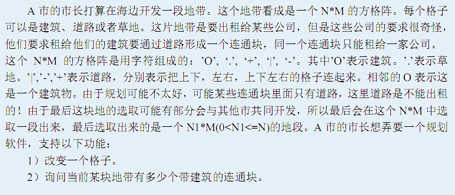

BZPRO
#3204. [Sdoi2013]城市规划
内存限制：64 MiB
时间限制：50 Sec
提交
提交记录
讨论
题目描述

输入格式
第一行两个整数 N, M ，如题意所示
接下来的 N 行，每行 M 个字符表示这片地带的初始情况。
接下来的一行一个整数 Q，表示操作次数
就下来的 Q 行，每行有两种格式：
C i j k : 把第 i 行第 j 个格子修改成 k
Q l r: 询问 (l, 1) (r, M) 这块地带连通块个数
N <= 100000, M <= 6, Q <= 10000
输出格式
对于每个询问中的 Q，输出一行，一个数字，表示当前的连通块个数
样例
样例输入
4 4
.O..
O+O|
.O.. ..OO
4
Q 1 4
C 2 4 + C 3 4 | Q 1 4
样例输出
2
1
数据范围与提示